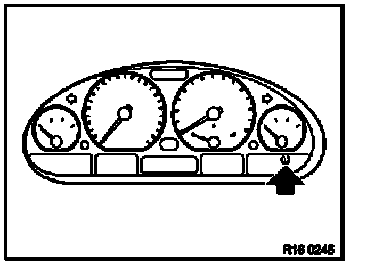

Tire Pressure Control (RDC)
Tyre pressure control (RDC)
RDC system description
RDC permanently monitors the tyre pressure and the temperature in the tyres both while the vehicle is being driven and when it is stationary. Data is transmitted via data telegram by the wheel electronic units to the antennas installed in the wheel housing and on to the RDC control unit. There the data received is compared with the stored limit values.
After correcting the air pressure with the engine oft and the ignition on press the Set button and hold (approx. 6 seconds) until the words "Set tyre pressure" appear in the instrument cluster (instrument cluster high) or the yellow LED lights up (basic instrument cluster).
If the limit values are exceeded the driver will be warned via the instrument cluster in two stages as follows:
Loss of tyre pressure
Drop in tyre pressure of 0.2 to 0.4 bar
Warning
Yellow LED on basic instrument cluster or Text: "Check tyre pressure" on instrument cluster high
gong: no
Drop in tyre pressure of more than 0.4 bar
Red LED on basic instrument cluster or Text: "Tyre failure" on instrument cluster high
Gong: yes
Advantages of RDC
1. Safety
early warning in the event of rapid loss of pressure
warning of loss oftyre pressure through normal diffusion
2. Comfort
unchanging ride comfort
instruction to check tyre pressure as necessary
3. Service life economy
minimisation of tyre wear
minimisation of fuel consumption
4. New developments
allow tyres with emergency running characteristics to be fitted
no spare wheel if tyres with emergency running characteristics are fitted (saves weight)
RDC system layout
1 RDC control unit
2 Wheel electronic units (4 0ff)
Wheel electronic unit for spare wheel (optional)
3 Receiving antennas (4 0ff)
Wiring harness
4 Set button
5 Display element
6 Anti-theft warning system
Component description
RDC control unit
Fully diagnosis-compatible
Task: evaluates the following telegrams from the wheel electronic units:
- tyre pressure
- tyre air temperature
- identification number (ID) of wheel electronic unit
- remaining service life of wheel electronic unit battery
If required information or a warning is transmitted.
Wheel electronic unit with valve
Components:
- pressure sensor
- temperature sensor
- transmitter
- frequencies according to country
- power supply
- service life: approx. 7 years
- not exchangeable
Installation location of wheel electronic unit in disc wheel

The wheel electronic unit (1) is screwed to the valve (2) on the disc wheel (3)
Identifying feature:
metal tyre valves
Note: Different valves have to be used to allow for the different disc wheel sizes. The valves are colour-coded. The correct coding can be taken from the spare parts catalogue.
Antenna
There is an antenna in each wheel housing.
Task: receives telegrams and forwards these to the RDC control unit.
Set button

Installed in the instrument panel to the right of the steering wheel. (E46: in the centre console)
Symbol: tyre cross-section
Task: initialisation after resetting cold tyre pressure or after changing tyre or wheel location.
Display element in instrument cluster

Indicator lamp lights up yellow: drop is tyre pressure of 0.2 to 0.4 bar
Indicator lamp lights up red: drop in tyre pressure greater than 0.4 bar